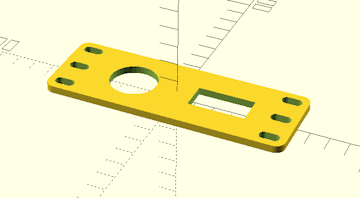
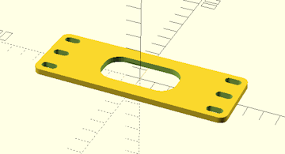
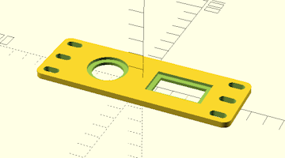

Configuration Options :: Custom Cutout Options
Starting with version 0.50, up to three user-defined cutouts can be chosen as faceplate modifications. These cutouts can be round or rectangular, and can be placed as a repeating grid of up to twelve wide by four rows tall.

Although only the options for custom cutout A are shown here, custom cutouts A, B, and C have similar settings for each cutout.

In order to enable a custom cutout, it must be selected as a faceplate or cage-back modification.

A 4mm square outer perimiter is added to the cutout in order to create solid fill on ventilated faceplates. This will add an 8mm space between adjacent copies of the cutout when placed in a grid. Increasing horizontal/vertical padding settings will increase that space accordingly.

custom cutout a horizontal padding
custom cutout a vertical padding
By default, a custom cutout has a 4mm wide perimeter added to solidify any faceplate ventilation grids that might be present. These settings add a padding distance to expand the gaps between horizontally and/or vertically adjacent cutouts in a grid, which can be useful for connectors/receptacles that require more space.
custom cutout a corner radius
Sets the corner radius for rounded corners of custom cutout A when using a rectangular cutout. Set this to zero to disable corner rounding. This setting is ignored if custom cutout A is round.
Corner radius is restricted to just under half of the shorter of the length and height dimensions of the rectangular cutout's size. Increasing the value past that point will have no effect.

custom cutout a snap in recess
When this setting is enabled, a 3mm wide recess is removed around the actual custom cutout, which reduces the panel thickness inside the recessaed area to approximately 2mm. This allows for the use of snap-in connectors/receptacles, which often require thinner panels into which to mount.
Enabling this option will increase the size of the cutout and add 6mm to its perimeter space reservation.

 Back To Top
Back To Top Navigate Site
Navigate Site Support This Project
Support This Project
 Community
Community
 Legal Notices & Information
Legal Notices & Information
 Copyright/Trademarks
Copyright/Trademarks